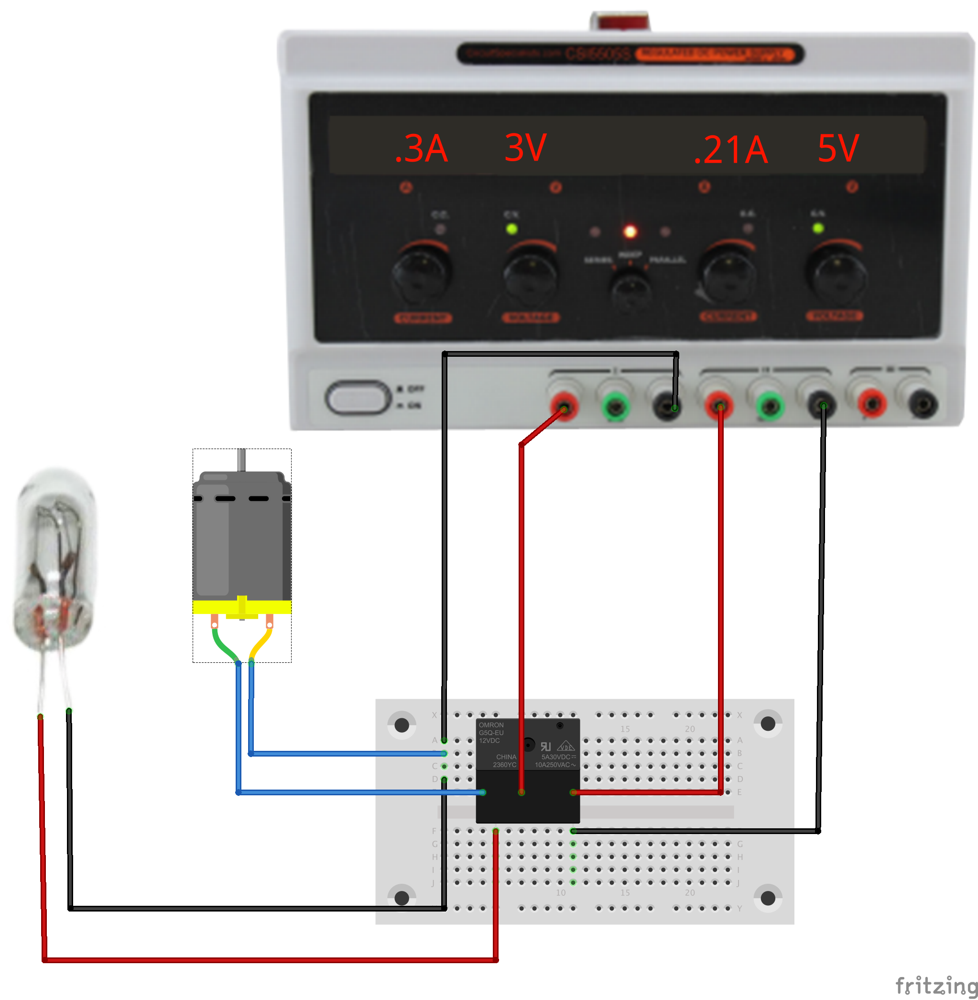
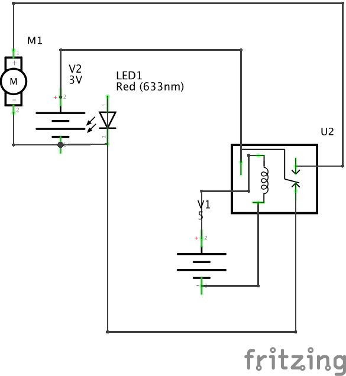

Connect two circuits using a relay.
A relay is a mechanical switch controlled by an electrical signal. A current through the control coil creates a magnetic field which physically moves an electrical contact from a normally-closed (NC) contact to a normally-open (NO) contact. In most relays, the switch immediately returns to the normally-closed state when the coil is de-energized. Relays come in many shapes, sizes, and configurations; this exercise uses a relatively small relay controlled by a 5V signal.
We can look at it in several ways: as an interface between an informational signal and an energetic signal; as a binary amplifier which allows a modest control signal to control a high-power energetic circuit; as an isolator which allows the input circuit to affect the output circuit without sharing any current.
Relays are relatively slow but very robust. The contacts are just switch contacts, so they have no polarity, and many relays are suitable for safely switching AC line circuits. There are other variants on relays such as latching relays in which one coil is pulsed to change state and another pulsed to change it back. There are relays with many sets of contacts for controlling multiple output circuits from a single control coil.
Relays are the original form of logic component; it is possible to build a programmable computer using nothing but relays. The early automatic telephone switches made extensive use of elaborate electromechanical switches.
Small challenge: set up a relay circuit in which the coil current passes through the NC contact in series with the coil. What do you expect will happen?
 